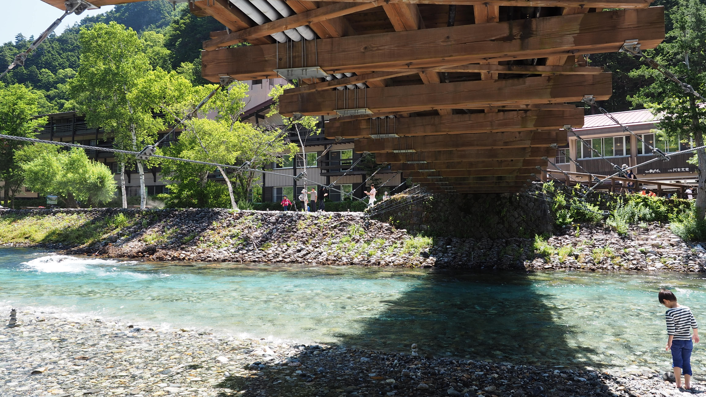

A previsão da cidade ajuda, mas não decide sozinha uma trilha. Em montanha, cada metro de altitude pode alterar temperatura, vento, nuvem, chuva e sensação térmica. O erro comum é olhar o tempo de Matsumoto, Nagano ou Gifu e imaginar que o cume obedecerá ao mesmo roteiro.
Vale, encosta e cume são mundos diferentes
A cidade costuma estar protegida por prédios, vale e infraestrutura. A encosta recebe vento canalizado, sombra, umidade e mudança rápida de visibilidade. O cume fica exposto. Mesmo quando a previsão urbana mostra sol, a crista pode ter nuvem, rajada forte e queda brusca de temperatura.
Olhe altitude e horário
Antes de sair, confira previsão por área de montanha quando houver, boletins da JMA, avisos de vento, chuva, trovoada e temperatura. Compare manhã e tarde. No verão japonês, tempestades convectivas podem aparecer depois do almoço; no outono, a tarde curta muda a margem de retorno.
Sensação térmica importa
Vento e roupa molhada podem tornar uma trilha de verão fria durante uma parada. Levar camada seca, corta-vento leve e capa de chuva não é exagero. É reconhecer que clima de montanha pune quem planeja pelo termômetro da estação mais próxima.
Gatilho de recuo
Se a nuvem baixa, o vento aumenta, trovões aparecem ou a visibilidade cai, trate isso como informação operacional. Recuar cedo é uma decisão técnica, não fracasso. A montanha continuará lá; sua janela de segurança, talvez não.
Antes de sair
Use este texto como orientação editorial, não como autorização automática para entrar em qualquer rota. Em trilhas no Japão, confirme previsão, acesso, fechamento de trilha, horário de transporte, condição física do grupo e regras locais no dia da saída.
Fontes consultadas
- Japan Meteorological Agency
- JMA: heat illness and weather terminology
- Japan National Parks: safety and disaster information
Origem editorial: pauta do calendário Notion da Elevação, publicada no Japão Relativo em 14 de agosto de 2026.